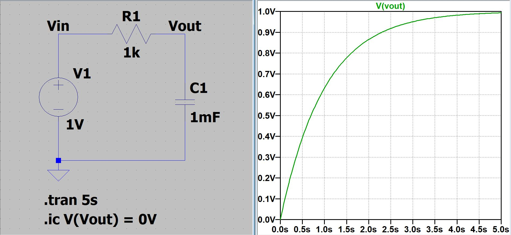
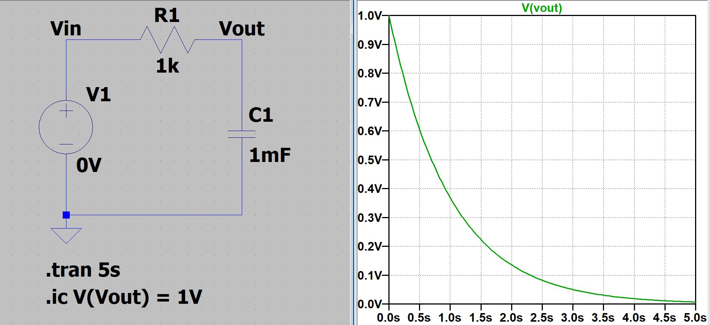

AC Circuits
Circuits where the core functionality of the device is based on Alternating Current (AC) principles.
RC Time Constant
A capacitor in series with a transmission line will take some time to charge.
- For a DC Circuit, charged capacitors act like a wire
- For a AC Circuit, capacitors are considered open until charged.
\(RC\) is considered the time constant \(\tau{}\)
\[
\tau{} = R \cdot{} C
\]
Charging Equation - Voltage on capacitor while accumulating current  SPICE Sim -> Click to Download
Discharging Equation - Voltage on capacitor while discharging current  SPICE Sim -> Click to Download